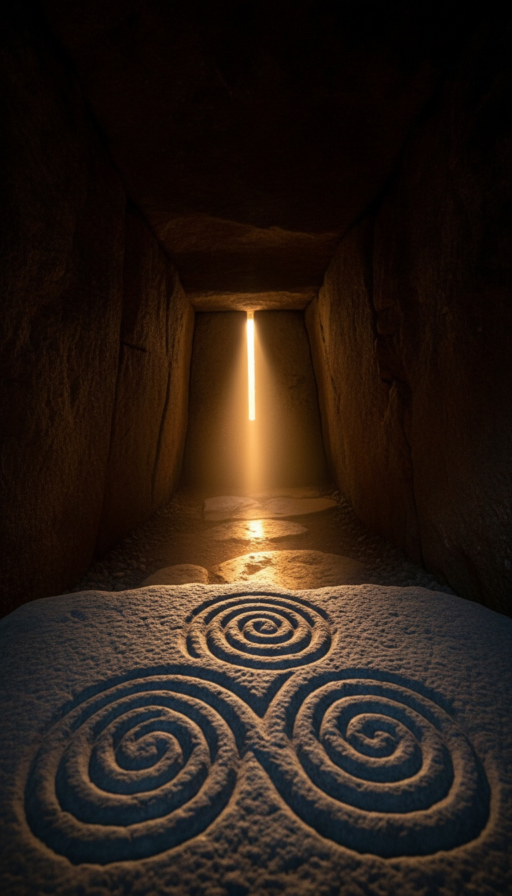

A tomb built in 3200 BC captures the winter solstice sunrise to within one degree of geometric perfection. No GPS. No transit level. No written mathematics. No metal of any kind. The structure still hits its target every December 21st, five thousand years later, which means the people who built it solved an engineering problem that most contemporary textbooks refuse to frame as a problem at all.
Newgrange. County Meath. Ireland. What the stones say and what the classification says are two different things.

The Architecture of a Targeting Mechanism
The Newgrange mound sits in the Boyne Valley, County Meath, Ireland, constructed between 3200 and 3100 BC based on radiocarbon dating of organic material recovered during excavation. That places it five hundred years before the first phase of Stonehenge and roughly one thousand years before Egyptian workers set the first block of the Great Pyramid of Giza. The mound covers just over one acre of ground and rises to approximately thirteen meters at its peak. Ninety-seven kerbstones, several weighing up to ten tons each, ring the entire perimeter. The outer retaining wall is faced with white quartz. Inside: a nineteen-meter stone-lined passage terminating in a cruciform chamber. The roof-box is the structure that matters. It is a rectangular opening cut into the facade above the entrance doorway, positioned at a calculated upward angle, separated from the door itself. It is not decorative. It is not a ventilation slot. Professor Frank Prendergast of Technological University Dublin, whose published surveys of Irish megalithic astronomy span decades, confirmed in his measurements that the roof-box geometry is calibrated to admit direct sunlight only at the winter solstice sunrise bearing. Every other morning of the year, the inner chamber sits in complete darkness.
December 21, 1967. Michael O'Kelly Stands Alone in the Chamber.
Archaeologist Michael J. O'Kelly of University College Cork led excavations at Newgrange from 1962 to 1975. Local tradition held that sunlight entered the tomb at midsummer. O'Kelly examined the orientation of the roof-box, noted it pointed southeast rather than northeast, and calculated that the relevant solar event was the winter solstice sunrise. On December 21, 1967, he entered the chamber before dawn and waited. His field notes, published in his 1982 book Newgrange: Archaeology, Art and Legend (Thames and Hudson, London), record what followed at 0902 hours: a shaft of direct sunlight entered the roof-box, traveled the full nineteen-meter length of the passage, and illuminated the floor of the inner chamber. O'Kelly described it as a brilliant beam. It held for seventeen minutes. Then it retreated. The chamber returned to total darkness. O'Kelly spent the following years measuring, resurveying, and publishing. His conclusion, shared by every subsequent survey team that has revisited the site: the alignment is deliberate. Not approximate. Not incidental. Deliberate, and repeatable to the same geometry every December 21st.
"The roof-box aperture deviates 0.9 degrees from perfect solstice alignment. The U.S. Army Corps of Engineers defines precision-grade survey closure at within one degree. Newgrange was built in 3200 BC with ropes and wooden stakes."
The Precision Numbers
The winter solstice sunrise azimuth at the latitude of Newgrange sits at approximately 133 degrees. The roof-box aperture aligns to within 0.9 degrees of that bearing. Prendergast's survey data, published in the Journal of Astronomical History and Heritage, places the angular deviation at less than one degree of arc. The U.S. Army Corps of Engineers Engineer Manual EM 1110-1-1005 defines first-order horizontal survey as achieving closure within one second of arc per instrument station. One degree equals sixty arc-seconds. The builders of Newgrange achieved their alignment within 0.9 degrees using solar observation across multiple years, sighting posts driven into the ground, and counting. No theodolite. No trigonometric tables. No written records of the calculation. The margin they achieved falls inside the precision threshold professional surveyors recognize today as grade-one work. Whatever method produced a 0.9-degree result at 3200 BC required not a single genius moment. It required a sustained, multi-generational observational program with a mechanism for passing results from one generation to the next.
The Tools They Did Not Have
The National Museum of Ireland in Dublin holds the tool assemblage recovered from Boyne Valley sites. Stone axes. Antler picks. Bone chisels. No bronze. No iron. The Bronze Age does not reach Ireland until approximately 2000 BC. Newgrange predates Irish metalworking by twelve hundred years. The wheel does not appear in the Irish archaeological record until centuries after the Boyne Valley complex was complete. There was no written language anywhere on the island in 3200 BC. No surveying tables. No geometry texts. No arithmetic notation of any kind. What the builders left is carved stone. The entrance kerbstone at Newgrange carries a triple spiral, lozenges, and concentric circles executed with a precision that required a metal or stone pick driven with controlled, repetitive force into basalt. The same triple spiral appears on interior stones at Knowth, a second passage tomb in the same valley. Same symbol. Different structure. Different astronomical alignment. Whoever transmitted the symbol transmitted the methodology behind it.
The Rest of the Boyne Valley
Knowth and Dowth sit within two kilometers of Newgrange. Both are passage tombs. Both were built by the same population during the same construction period. Knowth contains two passages: one aligned to the spring equinox sunrise, one to the autumn equinox sunset. Dowth has a chamber that captures winter solstice light from the western approach, the same solar event as Newgrange targeted from the opposite compass direction. Three structures. Four distinct astronomical alignments. All within walking distance of each other. All built without metal. Archaeologist Robert Hensey of the National University of Ireland Galway, writing in The Cambridge Archaeological Journal, documented the coordinated astronomical logic of the Boyne Valley network across multiple publications. His conclusion: the three sites represent a deliberate, multi-generational observational program, not three independent burial decisions that happened to face the sun. Multiple structures, multiple generations of builders, multiple calibrations, all tracking the same sky from different angles. That is not folk construction. That is an institution.
What the Word "Tomb" Does Not Explain
Every major archaeological reference classifies Newgrange as a passage tomb. The classification comes from the cremated human remains found in the inner chamber during O'Kelly's excavation. Bones equal tomb. The Smithsonian Magazine, in a December 2020 feature on Newgrange, described the solstice illumination as possibly symbolic, a way of bringing light to the ancestors. That explanation requires no engineering precision. It explains nothing about why the aperture deviation is 0.9 degrees instead of ten. Ritual does not demand precision. Measurement demands precision. A burial chamber does not require a targeting aperture that functions for seventeen minutes on one specific morning of the year and remains dark for the remaining three hundred sixty-four days. A calendar requires that. An observatory requires that. The bones in the chamber are real. The precision in the roof-box is real. The classification absorbs the bones and discards the engineering. It has been doing that for six decades.
The people who built Newgrange tracked the sun across multiple years. They selected a site, calculated a bearing, engineered a slot, moved tens of thousands of tons of material into position, and produced a structure that still hits its target every winter solstice without maintenance. They did this without writing, without metal, and without wheels. That profile does not match the Neolithic farming population archaeology assigns to the Boyne Valley. It matches a population with a long-running, institutionalized observational tradition that stored its output in stone because stone outlasts everything else.
Newgrange has been excavated, carbon-dated, surveyed by satellite, and published in peer-reviewed journals for six decades. The alignment is not disputed. The precision is documented. The tool absence is documented. The only thing that has never been answered is what a civilization capable of calibrating a solar instrument to 0.9 degrees in 3200 BC was actually measuring, and why three structures in the same valley pointed at four different events were not enough. The chamber goes dark every December 22nd. It stays dark for another year. Whatever was being tracked, Newgrange is still tracking it.
Before you go
7 books the Vatican doesn't want you reading. Free PDF — the texts they cut, with sources. Joined by 140+ Inner Circle members.
No spam. Unsubscribe anytime.
Go deeper
The Hidden Canon, Vol. I — Enoch. Jubilees. Thomas. Mary. Judas. 90 pages, 14 chapters, every receipt cited. The books your Bible quietly removed.
Read the Canon →Books that informed this investigation
As an Amazon Associate, Hidden Epoch earns from qualifying purchases. Cost to you: nothing.
Research safely
The VPN we use to research without being tracked. First 3 months free.
Get NordVPN →